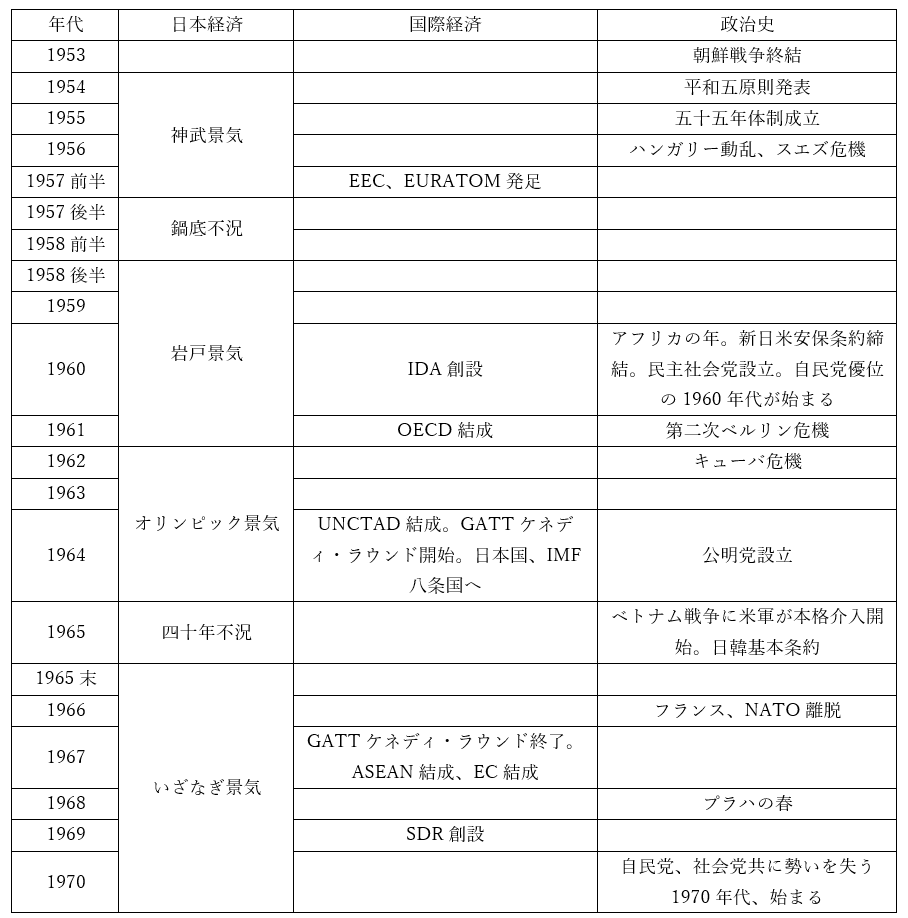

高度経済成長期

●第一次高度経済成長期
・朝鮮戦争による特需景気は、日本経済を復活させるきっかけとなった
・ただ、それだけで完全に復活した訳ではない
⇒と言うのは、当時は占領下だった事もあり、「米国が欲しいものを」「米国から買った原料で作り」「米国の言い値で売る」状態だったのである。確かに朝鮮特需は日本国の輸出を増やしたが、それは、日本国が「米国の工場」になる可能性をはらんだものでもあった
・しかし、朝鮮戦争そのものは1953年に終わる
・また、傾斜生産方式や朝鮮特需で供給能力を回復させた日本経済は、復興の兆しを見せ始めもする
・こうして、1954年。【神武景気】と呼ばれる好景気が始まるのである
⇒初代天皇たる【神武】天皇以来の好景気、という意味で名付けられたもの
・この神武景気中の1956年には、経済白書に［もはや戦後ではない］と記された
・それぐらい、日本の景気はよくなったのであり…
・また、「終戦後の混乱期」「終戦後の復興期」と呼ぶべき時代は終わったのである
・実際、神武景気中の1955年、日本国は【GATT】に参加している
・GATTに参加してこそ、戦後の西側国際経済に、自由貿易に参加できる訳である
・その参加が認められたという点から見ても、神武景気は「もはや戦後ではない」と呼べる時代であった
※当然ながら、この時期は【十二条】国でありまた【十四条】国である
※ちなみに、【IMF】には神武景気が始まる前、1952年に加盟している
・さて、基本的に、神武景気から1970年までを【高度経済成長】期と呼ぶ
・この時期は基本的に、実質経済成長率が年10%を上回った
・焼け野原の敗戦国が、経済大国として完全復活したのである
⇒最終的に、米国に次ぐGNP二位というところまで成長した。その頃には、「やがて日本は経済面でアメリカを追い越す」という予想は、米国人にとって自明となっていた。それほどまでに、当時の日本には勢いがあった
・さて、高度経済成長期は、一般に前後半に分かれる
・前半となる第一次高度経済成長期は、勿論神武景気から始まる訳だが…
・この時期の特徴は［民間］主導、［内需］主導が特徴である
・これはどういう意味かと言うと…
・民間主導というのは要するに、民間企業の［設備投資］が軸になった、という話である
⇒日本企業は戦争で焼け野原になったところから再出発した訳だが、そうなると工場なんかも作り直さなければならない。機械も買い直す必要がある。そしてある程度儲けが出たら、その儲けを新たな工場の建設や機械の購入に使う…というような形で、民間企業が大々的にカネを使ったのが、経済成長の原動力となった
・また、内需主導というのは文字通り、日本人相手にモノを売って儲けていた、という話である
・それを象徴しているのが神武景気だった
・【三種の神器】と呼ばれる商品は当時、日本国内で飛ぶように売れた
・即ち、［冷蔵庫］［洗濯機］［テレビ］である
※この頃の［テレビ］は白黒
・やはり終戦後というのもあって、当時の日本人はあまりモノを持っていなかった
・また、戦後のこの時期は時代の変わり目でもあった
⇒即ち、戦前というのはどうしても、「都会は現代的」だが「農村は江戸時代とさして変わらない」という時代であった。都会にも農村にも電気が通り、上下水道が通り、テレビや冷蔵庫のような家電製品があり…というような状況になり始めるのは、高度経済成長期であった
・そういう背景があって、国内でモノが飛ぶように売れたのである
・勿論、この当時の日本の商品は国際競争力がなかった、という事情もあった
・世界一位の輸出大国たる米国の機械製品に比べれば、第一次経済成長期の日本の製品は粗悪品であった
・ただでさえ焼け野原からの再出発という事で、当時の日本はどうしても輸入をせねばならない
・その上輸出しようにも、国産商品に国際影響力がない
・そういう事情から、第一次高度経済成長期の貿易収支は【赤字】が基本であった
・実際、神武景気を終わらせたのは、この貿易赤字が原因であった
・と言うのは、赤字という事はつまり、日本国に備蓄された外国の通貨が減っていくという事である
⇒例えば米国から輸入するのであれば、米ドルを米国に渡す形で支払う必要がある。そうなれば、日本国に備蓄された米ドル（こういう、その国に備蓄された外貨の量を外貨準備高と呼ぶ）は減る。赤字が続けば、日本国に備蓄された米ドルがなくなってしまう可能性がある。いわゆる［国際収支の天井］である
・この可能性を危惧した日本政府は、［金融引き締め］を行った
※貨幣流通量を増やすのが金融［緩和］、貨幣流通量を減らすのが金融［引き締め］
・カネであろうとも、少ないモノの価値は上がる。貨幣価値が上がれば、物価が下がる
・つまり金融引き締めはデフレを引き起こし、不況となる
・不況になれば、機械を外国から輸入しようという企業も減る…という訳である
・こうして1957年後半からは、［鍋底不況］と呼ばれる不況期に入る
・この名前は、1958年の経済白書の「不況は中華鍋の底をはう形で長期化する」から来ている
・ただ、実際には、その1958年の後半から、日本は再び好景気に入る
⇒結局この時期は、急速な技術革新の時代であり、その革新にのっかる形での設備投資、消費の拡大というのは止まらなかった。三種の神器は引き続き、爆発的に売れ続けた。結果として、好景気が生み出された訳である
・この1958年後半からの好景気を、［岩戸］景気と呼ぶ
⇒神武景気は、要は「天地が始まって以来の好景気」という意味もあって「初代天皇たる神武天皇以来の好景気」として名付けられた。そこから更に遡って、今度は天照大御神が岩戸に隠れて以来の好景気、として名付けられた
・この岩戸景気は1961年まで続く
・そしてこの1961年、当時の［池田勇人首相］がぶち上げたのが、［国民所得倍増］計画である
⇒10年で、日本のGNPを二倍にするという夢のような計画
・この計画は、後に成功する事になる
・そして、岩戸景気の後、高度経済成長期はその様相を変える事になる
●転換期
・岩戸景気が終わった後、1962年の初秋まで、一年に満たないが不況の時期がある
・そして1962年11月から始まるのが、［オリンピック］景気である
・これはその名の通り、オリンピックに伴う好景気であった
・即ち、1964年10月に東京オリンピックが開かれる事となった
・そして近代オリンピックとは、少なくとも清廉潔白なスポーツ大会ではない
・大会本番は、国威を発揚する代理戦争であり…
・また、その準備は、大規模な公共事業の口実となるものである
・実際、この時の日本国は「オリンピックだから」を言い訳に大規模な公共事業を行った
・例えば、東海道新幹線はこの時に作っている
・首都高速道路が建設されたのも、基本的にはオリンピック開催決定後である
・羽田空港に繋がる東京モノレールも、オリンピックに合わせて建設された
・都営地下鉄日比谷線も、オリンピック開催までに一気に完成させた
※現東京メトロ日比谷線。工事の開始自体は開催決定直前だったが、オリンピックに合わせて大量の資金を投入し、一気に完成させた
・このようなインフラ建設というのは、国民が豊かに暮らすに必要なものである
・一方で、カネがかかるのもあって、なかなか工事が進まない場合も多い
・オリンピックは、その突破口となり得るのである
※そういう意味では、2020/2021東京オリンピックは「世界一カネのかからない五輪」を掲げた時点で完全な失敗作だったという話でもある。令和三年現在、日本のインフラの多くは昭和に作ったものであり、老朽化しつつあって更新しなければならない状態である。何を考えているのか…
・ともあれ、これだけ公共事業をやった訳だから、当然、民間企業も大いに儲かった
・結果、好景気になった訳である
・そしてこのオリンピック景気が、高度経済成長期の転換点となった
・既に見たように、高度経済成長期の前半は［民間］主導、［内需］主導であった
⇒即ち、民間企業が自主的に設備投資を行い、それによって増産された商品を国民が買いまくる…これによって、第一次高度経済成長は成された訳である
・しかしオリンピック景気は明らかに、民間主導ではなかった
・公共事業という、［公共投資］主導のものであった
・また、1960年代には日本の商品も、海外の製品と比べても遜色ない質のものになってくる
・即ち、戦後日本も輸出によって稼げるようになってくるのである
・オリンピック景気終盤から終了直後にかけて、日本国の輸出額は本格的に増えてくる
・岩戸景気ぐらいまでは赤字基調だった貿易収支も、黒字になってくる
・これに合わせて、1963年、日本国はGATT【十一条】国に（貿易制限不可に）
・また、1964年、日本国はGATT【八条】国に（為替制限不可に）なった
・もっと言えば、先進国クラブの異名を取る【OECD】に日本が参加したのも、1964年であった
・日本国が、名実ともに先進国、列強の地位に復帰した事を示すのが、1964年の五輪だったのである
・こうして、オリンピック景気を機に、高度経済成長の形は変わった
⇒一般に、［第二次］高度経済成長は［公共投資］主導、［外需］主導と言われる
※外需主導と言っても、結局、日本国のGNP/GDPは圧倒的に内需が優位である。日本国のGDPに占める輸出額の割合は、平成三十年現在でも二割いかないぐらい。ただまぁ、オリンピック景気の時期以降、日本国の輸出額が増えて貿易黒字が基本となった、というのは大きな変化ではあると言える
・高度経済成長の形が変わるのと時を同じくして、「三種の神器」も変わった
・第一次高度経済成長を支えた三つの商品とは即ち、冷蔵庫、洗濯機、白黒テレビだった訳だが…
・それが第二次高度経済成長期となると、いわゆる［3C］となった
⇒［クーラー］［カー］［カラーテレビ］の三つのC、という形でこう呼ばれる
●第二次高度経済成長期
・オリンピック景気は1964年に終わる
・その翌年、1965年は［反動（昭和四十年）］不況と呼ばれる不況の年となった
⇒当然と言えば当然で、1964年までは、五輪の開催に間に合わせるべくインフラを作りまくっていた。五輪が終わった後も公共事業はあったが、少なくとも五輪前のような勢いではなくなった。それは不況になって当然である
・ただ、この時日本政府は迅速に動いた
⇒当時の日本人は、世界恐慌の経験者がまだまだ現役。何ならその前の、第一次世界大戦後の不況を経験した者も多い。そういう事情から、大不況の兆候に敏感だった
・夏には、戦後初となる赤字国債を発行。反動不況は一年で終息した
・こうして、1965年の末から、【いざなぎ】景気と呼ばれる好景気が始まる
⇒初代天皇も、日本神話の主神も既に使ってしまった…という事で、いよいよ、日本列島を作った創造神伊邪那岐を持ち出してきた
・この好景気は【五十七ヶ月】という長期に渡っており、日本経済は再び高度な成長を遂げる事になる
・そして日本経済は、1967年に【イギリス】を、1968年に【ドイツ連邦共和国（西ドイツ）】を抜いた
・かくて、日本国は世界二位の経済大国となったのである
●高度経済成長期の特徴
・高度経済成長期は、「現代日本」を誕生させたものであった
・日本の重化学工業は、この時期に大きく成長したし…
・スーパーマーケットのような量販店が登場したのも、この時期である
⇒それまでは、「その町の八百屋」「その町の魚屋」「その町の電気屋」があり、日本人はそこでモノを買っていた。ほしいものがないからとか言って、そういう場所を利用しない者は、村八分にされた。そういうものを打破し、好きなものは好きなところで買うようになった（そしてまた、商店街がシャッター街化した）最初の動きと言えるスーパーマーケットは、高度経済成長期に誕生した
・日本全国にインフラが建設されたのもこの頃である
・今の日本は全国津々浦々、田舎であろうとも電気水道ガスが通り、ダムや堤防があるが…
・このような状況になったのは、高度経済成長期後半の公共事業のお陰である
⇒逆に言うと、日本全国のインフラは一斉に耐用年数を迎えてしまう、という事である。実際、2020年代以降、日本全国のインフラの寿命が問題になると予想されている。言ってみれば、2020/2021東京五輪はまさに、インフラ再建に千載一遇の好機だった訳だが…見事に無駄にしましたね、うん
・労働者の収入、特にサラリーマンの［収入］が激増し、多くの日本人に中流意識を植え付けた
⇒いわゆる「一億総中流」、日本人に「あなたは上流階級？ 中流？ 下流」と聞けば、十中八九「中流」と答える現代の風潮は、高度経済成長による収入の増加によってこそ誕生した
※高度経済成長期はまさに、「商品を作れば作るほど売れる、儲かる」という時代であり、人手はいくらあっても足りなかった。需要が上がれば物価も上がる。［労働力］の需要が高まって、労働者の賃金が［上昇］した訳である
・また、農村から都会への人口の大流出が起きたのも、この時期である
⇒いわゆる［東京］一極集中は、この延長線上にある
・無論、今も昔も「農村から都会へ」人は移動するものである
・だが特に高度経済成長期は、物凄い勢いで人が移動した
・高度経済成長期、都会には多数の工場が作られ、都会の企業は多くの労働力を必要とした
・一方、農村は、人がだだ余りの状態であった
⇒洋の東西を問わず、かつての農村では「子供」は「労働力」であった。子供を沢山作って農作業を手伝わせる訳である。しかし、子供が成長してくると、田畑を相続できる長男はともかく、次男以降の処分に困る。次男以降は、何らかの形で「捨て」ねばならない。戦前日本なら軍隊に就職したが、戦後はそういう訳にもいかない。こういう、農村のあぶれた人々が、一気に都会へ雪崩れ込んだのが高度経済成長期である
・一般に、「農村から都会への人口移動」と言うと、農村にとって100%損のように思える
・しかし実際には、そうではなかった
・都会は労働者が手に入る。農村は余った人間を「捨て」られる。WIN-WINだった部分もあるのだ
・とは言えこの大移動は結局、現代の［東京］と［地方］、［都会］と［農村］の対立の遠因となった
・と言うのは、「余った人間」以外も、農村から流出しだしたのである
・それこそ、次男以外の長男も、都会での成功を夢見て移住するようになった
・特に1960年代ともなると、農村に住む成年男性すら、農業をしないような状況となった
⇒平日は都会に行って会社で働き、休日は農村の自宅に戻り、場合によっては農業を手伝う…というような、一種の出稼ぎのような状況
・こうして、農村の（農業の）主な働き手たる［男子］労働者は、都会や工業に取られていった
・俗に言う［三ちゃん］農業が出現したのである
⇒お爺ちゃん、お婆ちゃん、お母ちゃんがやるから「三ちゃん」。1963年の流行語である
・農村にせよ農業にせよ、高度経済成長期に衰退を始めたのだった
・一方で、現代的な［核家族］を大量に生み出したのも、この人口の大移動であった
⇒「夫婦のみ」「夫婦と未婚の子供」「父親と未婚の子供」「母親と未婚の子供」による家庭を、核家族と呼ぶ
・従来の日本では、一つの家におじいちゃんもおばあちゃんもいる、大家族が普通であった
・しかし、高度経済成長期には、若者が［職］を求めて、農村から都会へ大移動した
・結果として、若者は移動先の都会で家庭を作るようになり、核家族が激増した訳である
・また、高度経済成長期に成長した「都会」とは、原則［太平洋］ベルトに属している
⇒太平洋側なら、工場を動かすのに必要な石油や鉄鋼を輸入するのに都合がいい。逆に日本海側は、その対岸にある中華人民共和国が敵国になってしまったので…
・当然、この太平洋側の「都会」では、［住宅］を始めとする土地の需要が上がった
・需要が上がれば価格も上がる。こういった都会の［地価］もまた、上昇したのだった
・また、高度経済成長期の特徴としては、資金調達についても言える
・既に見たように、この頃の企業の資金調達は【間接金融】が主流であった
・即ち、銀行からカネを借りる形で、企業が資金調達していたのである
・逆に言えば、この頃の企業は株式会社であっても、株主にいい顔をする必要はあまりなかった
・カネなら銀行が貸してくれるのだから、株主に媚びてカネを集める必要はないのである
・従業員の給料を削ってでも黒字を積み増すような真似をする必要はなかった
・むしろ、「大幅黒字になって税金取られるぐらいなら、社員に配ろう」という空気があった
・だからこそ、高度経済成長期はサラリーマンの給与が激増した、という側面もある訳である
・ちなみに、銀行がカネを貸すと言っても原資は何だったか？
※基本的に現代の銀行は、カネを貸すと言っても通帳に記入するだけである。とは言え高度経済成長期は原則、ブレトン・ウッズ体制崩壊前であり、完全に現代的な金融体制が確立する前だという事にも留意したい。そうなるとやはり、原資というのは大事になる
・それは、国民の［貯蓄］であった
・高度経済成長期の日本人はカネを持っていたし、また今も昔も日本人は預金が好きである
・この［貯蓄性向］、高い［貯蓄率］によって銀行に集まったカネを、企業に貸していた訳である
・そして、企業は銀行からカネを借りられるからこそ、社員に高い給与を保障できる
・好循環であった
・同じ銀行について言えば、［護送船団方式］も特徴と言える
・これは、戦争に於ける輸送船団の護衛が元となった言葉である
・戦争中の輸送船団は、どうしても一番遅い船に合わせて航行する事になる
・同様に、戦後日本の金融行政は、「一番弱い金融機関に合わせて」行われた
⇒第二次世界大戦以前、大日本帝国では金融機関がそれなりに潰れた。それこそ金融恐慌の時なんかは、中小の銀行がそれなりに潰れた。これを繰り返さない為に、「金融機関は一つも潰さない」「一番弱い金融機関に合わせて金融行政をやる」という護送船団方式が生まれた
・このお陰で、第二次世界大戦後しばらく、日本の銀行で破綻したものは皆無であった
・少なくとも高度経済成長期、日本国の銀行は一つも破綻しなかった
・だからこそ、企業は安心して銀行からカネを借りられた訳である